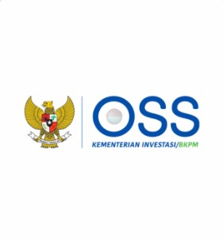
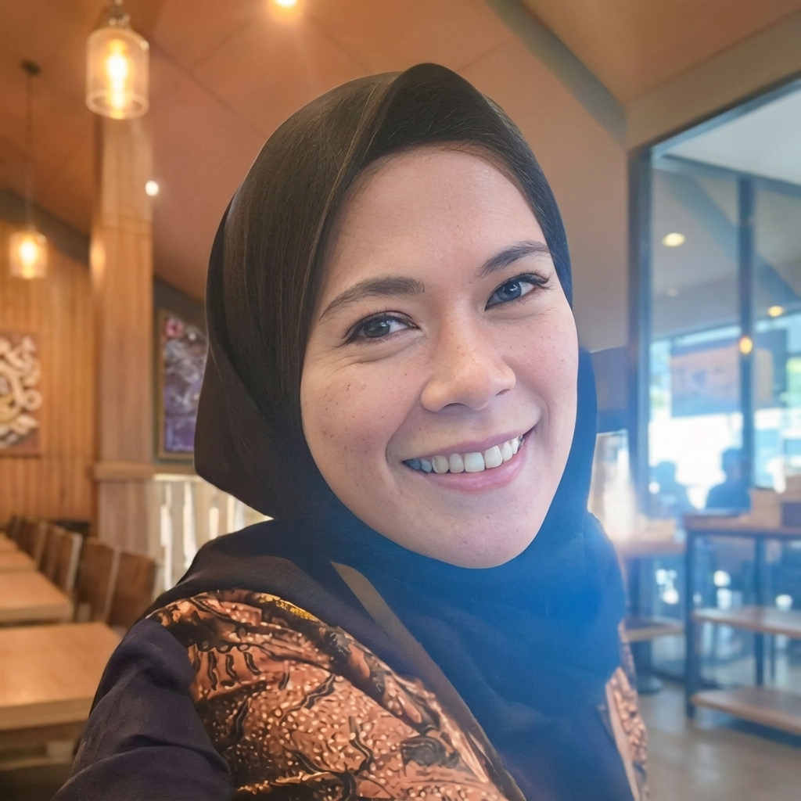

Notaris & PPAT
Havis Akbar, S.H., M.Kn.
Mitra terpercaya untuk layanan kenotariatan dan pertanahan di Kabupaten Garut, Jawa Barat. Kami melayani perseorangan, pelaku usaha, hingga instansi dengan ketelitian, transparansi, dan kepastian hukum.
Havis Akbar, S.H., M.Kn., M.M.
Notaris & PPAT Kabupaten Garut
Bermitra & Terafiliasi Dengan Lembaga Resmi


Fasilitas Konsultasi Nyaman
Solusi Legal Terpercaya & Transparan
Kantor Notaris & PPAT Havis Akbar, S.H., M.Kn.
Kami memadukan keahlian hukum kenotariatan dan pertanahan dengan penjelasan yang jernih, supaya setiap akta dan perjanjian yang Anda tandatangani dapat dipahami seutuhnya serta memiliki kekuatan hukum yang sempurna.
- Notaris & PPAT Berpengalaman
- Pelayanan Cepat & Tepat
- Layanan Hukum Terpadu
- Transparan & Kerahasiaan
Kunjungi Kantor Kami di Garut
Kantor Notaris & PPAT Havis Akbar berlokasi di pusat kota Garut, mudah dijangkau dengan akses jalan utama dan area parkir yang memadai.
Jl. Jendral Sudirman No.31, Sukamentri
Kec. Garut Kota, Kabupaten Garut, Jawa Barat 44116
Layanan Unggulan Kami
Layanan lengkap mulai dari legalitas usaha, perjanjian akta otentik, hingga pengurusan sertifikat tanah di Kabupaten Garut.

Pendirian Badan Hukum
PT, PT Perorangan, Yayasan, Perkumpulan, dan Koperasi resmi terdaftar Kemenkumham.
Lihat Selengkapnya
Pendirian Badan Usaha
CV, Firma, Persekutuan Perdata dengan pendaftaran Kemenkumham dan sistem OSS NIB.
Lihat Selengkapnya
Akta-akta Notariil
Perjanjian sewa, perjanjian kerjasama, surat kuasa, pengakuan hutang, wasiat, dan hibah.
Lihat SelengkapnyaLayanan Jasa Pertanahan
Akta Jual Beli (AJB), Hibah, APHB, Balik Nama Sertifikat, Pengecekan Sertifikat BPN.
Lihat Selengkapnya
Legalisasi & Waarmerking
Pengesahan tanda tangan surat di bawah tangan, pencatatan/pembukuan dalam buku daftar khusus.
Lihat Selengkapnya
Layanan Jasa Lainnya
Pemasangan Hak Tanggungan (APHT), SKMHT, Roya sertifikat, dan konsultasi legalitas pertanahan.
Lihat SelengkapnyaTransaksi Tanah Aman, Tertib, dan Sah
Jual beli, hibah, pembagian hak bersama (APHB), hingga peralihan hak atas tanah dan bangunan dibuat sebagai akta PPAT berkekuatan hukum penuh sesuai ketentuan Kementerian ATR/BPN.
Pendirian PT & CV Legal, Cepat, dan Terarah
Mulai dari akta pendirian, pengesahan SK Kemenkumham, pendaftaran NIB OSS, hingga perubahan anggaran dasar. Kami mendampingi perjalanan usaha Anda sejak langkah pertama.

Mengapa Memilih Kami?
Kepercayaan Anda adalah prioritas kami. Setiap berkas dan akta dikerjakan dengan ketelitian tingkat tinggi, kerahasiaan penuh, dan kepatuhan mutlak pada kode etik jabatan.
Tim Profesional Kami
didukung oleh tenaga profesional & berpengalaman, berorientasi pada pelayanan terbaik, memberikan solusi atas kebutuhan layanan kenotariatan dan pertanahan bagi masyarakat

Havis Akbar, S.H., M.Kn., M.M.
NOTARIS & PPAT
Staf & Tim Operasional Kantor




Pertanyaan yang Sering Diajukan
Berikut rangkuman informasi penting mengenai prosedur, dokumen pendukung, dan konsultasi layanan notaris serta PPAT.
Masih memiliki pertanyaan lain?
Tim kami siap memberikan penjelasan lengkap secara langsung.
Tanya via WhatsAppApa perbedaan mendasar antara Notaris dan PPAT? +
Notaris berwenang membuat akta otentik umum seperti pendirian badan usaha (PT, CV), yayasan, surat kuasa, dan perjanjian kerjasama. Sedangkan PPAT (Pejabat Pembuat Akta Tanah) bertugas khusus membuat akta otentik mengenai perbuatan hukum atas hak tanah dan bangunan, seperti Akta Jual Beli (AJB), Hibah, dan APHB.
Dokumen apa saja yang perlu saya persiapkan? +
Dokumen disesuaikan dengan jenis kebutuhan akta. Secara umum diperlukan identitas para pihak (KTP, KK, NPWP), bukti kepemilikan (Sertifikat Tanah asli, PBB terbaru untuk PPAT), serta izin usaha atau anggaran dasar (untuk badan usaha). Hubungi kami untuk checklist dokumen spesifik Anda.
Berapa lama proses pembuatan akta dan pendaftarannya? +
Waktu pengerjaan bergantung pada kelengkapan berkas dan koordinasi dengan instansi terkait (Kemenkumham, BPN, atau Bapenda). Pembuatan draf akta biasanya selesai dalam 1-3 hari kerja, sedangkan proses balik nama sertifikat atau SK pengesahan mengikuti estimasi resmi yang kami infokan secara transparan sejak awal.
Apakah data dan kerahasiaan akta saya terjamin aman? +
Tentu saja. Menjaga kerahasiaan seluruh informasi, isi akta, dan identitas para pihak adalah sumpah jabatan serta kewajiban mutlak seorang Notaris & PPAT yang kami jalankan dengan standar kepatuhan ketat.
Bagaimana prosedur untuk berkonsultasi? +
Anda dapat mengisi formulir pesan di bawah, menghubungi tim kami melalui WhatsApp (+62 877-3668-8999), atau datang langsung ke kantor kami di Garut pada jam operasional kerja (Senin - Sabtu 08.00 - 17.00 WIB).
Hubungi Kantor Kami
Kunjungi kantor kami langsung atau hubungi tim kami melalui WhatsApp untuk konsultasi cepat. Simak juga ulasan asli dari para klien kami di Google Maps.
Alamat Kantor
Jl. Jendral Sudirman No.31, Sukamentri
Kec. Garut Kota, Kab. Garut, Jawa Barat 44116
Jam Pelayanan
Senin – Sabtu: 08.00 – 17.00 WIB
Minggu: Tutup (Konsultasi pesan tetap dicatat)